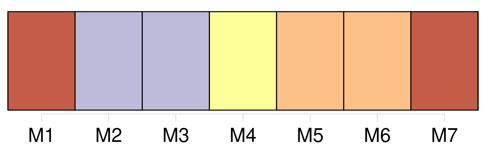

Longueur nb maillons : 15 mentions |
 |
Nous aurons aussi une grande automobile, et [notre chauffeur] s'appellera Gaston. [5 phrases]
Et, la voix nette et forte, il commande :
Et, tourné vers l'aval de la rivière, la main en abat-jour pour mieux voir [Gaston] filer en pleine mer, il nous renseigne : [il] a failli couler une barque de pêche. Bon, voilà qu' [il] se croit maintenant sur les grands boulevards avec [son] auto. Entendez -vous [sa] trompe?? [1 phrases] [Il] fait peur aux petits poissons. [2 phrases] Qu' [il] est bête [ce Gaston] , [il] croit que c'est un tramway, et [il] veut à toute force le déposer. [1 phrases] la baleine a retourné le canot, elle va [l'] avaler, [c'Gaston] Gaston |
|
Il est possible de télécharger la ressource sur la page Ortolang |
Si vous avez des questions ou vous voyez des erreurs, merci d'envoyer un mail à silvia.federzoni89@gmail.com |